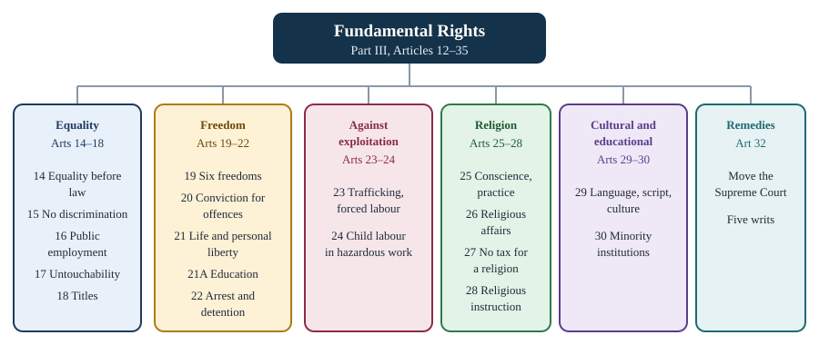

Chapter 3: Fundamental Rights and Their Remedies¶
Part III of the Constitution: what the rights are, their limits, and how they are enforced
Learning outcomes
When you have finished this chapter you should be able to:
- explain what makes a right "fundamental", and define "State" under Article 12 and "law" under Article 13;
- state the six groups of Fundamental Rights and the articles in each;
- apply the test of reasonable classification under Article 14 to a simple law;
- list the freedoms of Article 19 and the grounds on which each may be restricted;
- trace how Article 21 grew from A. K. Gopalan to Maneka Gandhi and beyond;
- explain what happened to the right to property;
- choose the correct writ for a given situation and explain the difference between Articles 32 and 226;
- explain how Fundamental Rights may be limited for the armed forces and suspended in an emergency.
3.1 What makes a right fundamental¶
Every democracy recognises rights. What is special about Fundamental Rights in India is that they are written into the Constitution, they bind the State, and they can be enforced in the courts. An ordinary legal right can be taken away by the legislature that created it. A Fundamental Right cannot be taken away by ordinary law; it can be changed only by amending the Constitution, and even then not so as to destroy the basic structure.
The framers drew on the American Bill of Rights, on the experience of the national movement (the Karachi resolution of the Congress in 1931 had listed fundamental rights) and on the need to protect minorities and disadvantaged groups. Part III (Articles 12 to 35) has been called the Magna Carta of India.
The Fundamental Rights fall into six groups, shown in Figure 3.1. A seventh, the right to property, was removed from Part III in 1978 (section 3.7).

Features of the Fundamental Rights¶
- They limit the State. Most rights are guarantees against the State. A few are also available against private persons: Article 15(2) (access to shops, wells and public places), Article 17 (untouchability), and Articles 23 and 24 (forced labour and child labour).
- Some belong to citizens only. Articles 15, 16, 19, 29 and 30 are for citizens. The rest, including equality before the law (Article 14) and the right to life and personal liberty (Article 21), are available to all persons, including foreigners.
- They are not absolute. The State may impose reasonable restrictions, and the courts decide whether a restriction is reasonable.
- They are justiciable. A person whose right is violated can go directly to the Supreme Court under Article 32, or to a High Court under Article 226.
- They can be amended, but not destroyed. Parliament can amend Part III under Article 368, subject to the basic structure doctrine (Chapter 11).
- They can be suspended in an emergency, except Articles 20 and 21 (section 3.9).
Article 12: who is "the State"?¶
Because the rights are mainly against the State, it matters who counts as the State. Article 12 defines "the State" to include the Government and Parliament of India, the Government and legislature of each State, and all local or other authorities within India or under the control of the Government of India. Local authorities include municipalities and panchayats. "Other authorities" has been read by the courts to include bodies that are instruments or agencies of the government: a statutory corporation or a government company may be "the State" if the government controls it deeply and pervasively in its finances, management and functions.
Article 13: laws that violate rights are void¶
Article 13 gives the rights their teeth.
- Laws in force before the Constitution are void to the extent that they are inconsistent with Fundamental Rights (Article 13(1)).
- The State shall not make any law that takes away or abridges the rights; a law made in contravention is void to the extent of the contravention (Article 13(2)).
- "Law" includes ordinances, orders, bye-laws, rules, regulations, notifications and customs having the force of law (Article 13(3)).
Two doctrines come from Article 13. Under the doctrine of severability, only the offending part of a law is struck down, if it can be separated from the rest. Under the doctrine of eclipse, a pre-Constitution law that conflicts with a Fundamental Right is not dead but overshadowed: if the right is later amended so that the conflict disappears, the law revives.
Article 13 is also the textual basis of judicial review of laws for violation of Fundamental Rights. Article 13(4), added by the 24th Amendment (1971), says that nothing in Article 13 applies to constitutional amendments; the courts review amendments instead under the basic structure doctrine.
Key idea
Fundamental Rights are enforceable guarantees, mostly against the State (Article 12). Any law, rule, order or custom that violates them is void to the extent of the violation (Article 13). Some rights belong to citizens only (15, 16, 19, 29, 30); the rest belong to every person.
3.2 The right to equality (Articles 14 to 18)¶
Article 14: equality before the law and equal protection of the laws¶
Article 14 says that the State shall not deny to any person equality before the law or the equal protection of the laws within the territory of India. The two phrases have different origins.
- Equality before the law comes from British law and is a negative idea: no one is above the law, and everyone, whatever their rank, is subject to the ordinary courts. It is linked to the rule of law.
- Equal protection of the laws comes from the American Constitution and is a positive idea: people in similar circumstances must be treated alike.
Treating people alike does not mean treating everyone identically. The law treats a child differently from an adult, and a large company differently from a small shop. Article 14 forbids class legislation (arbitrary favour or burden on a group) but permits reasonable classification. The Supreme Court has laid down a two-part test for a valid classification:
- it must be based on an intelligible differentia, a real and understandable difference that distinguishes those grouped together from those left out; and
- the differentia must have a rational nexus (a reasonable connection) with the object the law seeks to achieve.
Since E. P. Royappa v. State of Tamil Nadu (1974), the Court has also held that arbitrariness is the opposite of equality: an arbitrary action of the State violates Article 14 even if no classification is involved.
Worked example 3.1: Testing a classification
Situation. A State law exempts shops with an annual turnover below a fixed limit from a new licence fee, in order to reduce the burden on small traders. A larger shop challenges the law under Article 14.
Answer. Apply the two-part test. (1) Intelligible differentia: shops below the turnover limit are clearly distinguishable from those above it. (2) Rational nexus: the object is to ease the burden on small traders, and a turnover limit is a reasonable way to identify them. The classification is valid, and the law does not violate Article 14. By contrast, a law that exempted only shops owned by members of one community would fail the second limb (and Article 15), since community has no connection with the object of helping small traders.
Exceptions to equality before the law
Article 361 gives the President and the Governors immunity: they are not answerable to any court for the exercise of the powers of their office, and no criminal proceedings may be started against them during their term. Members of Parliament and State legislatures have immunity for anything said or any vote given in the House (Articles 105 and 194). Foreign diplomats enjoy immunities under international law.
Article 15: no discrimination¶
Article 15(1) forbids the State to discriminate against any citizen on grounds only of religion, race, caste, sex, place of birth, or any of them. Article 15(2) says that no citizen shall, on these grounds, be denied access to shops, public restaurants, hotels and places of public entertainment, or the use of wells, tanks, bathing ghats, roads and places of public resort maintained by the State or dedicated to public use. This clause applies to private persons as well.
The rest of Article 15 allows special provisions:
- Article 15(3): for women and children;
- Article 15(4), added by the 1st Amendment (1951): for the advancement of socially and educationally backward classes of citizens, or for the Scheduled Castes and Scheduled Tribes;
- Article 15(5), added by the 93rd Amendment (2005): for admission of these groups to educational institutions, including private ones, whether aided or unaided, except minority institutions;
- Article 15(6), added by the 103rd Amendment (2019): for economically weaker sections of citizens (other than those already covered), including reservation of up to 10 per cent of seats in educational institutions.
Article 16: equality of opportunity in public employment¶
Article 16(1) guarantees equality of opportunity for all citizens in matters of employment or appointment to any office under the State, and Article 16(2) forbids discrimination on grounds only of religion, race, caste, sex, descent, place of birth or residence. Again, exceptions follow. Parliament may prescribe residence as a condition for certain jobs (16(3)); the State may reserve posts for backward classes not adequately represented in its services (16(4)); and later amendments allowed reservation in promotion for Scheduled Castes and Scheduled Tribes (16(4A), 77th Amendment, 1995), the carrying forward of unfilled reserved vacancies (16(4B), 81st Amendment, 2000) and reservation for economically weaker sections (16(6), 103rd Amendment, 2019).
Reservation and the courts
In Indra Sawhney v. Union of India (1992), a nine-judge bench upheld 27 per cent reservation in central government posts for Other Backward Classes, recommended by the Mandal Commission. It held that the "creamy layer" (the advanced members) of backward classes must be excluded, that reservations should not normally exceed 50 per cent of posts, and that there should be no reservation in promotions; Parliament responded to the last point with the 77th Amendment. In Janhit Abhiyan v. Union of India (2022), the Court, by a majority of three to two, upheld the 103rd Amendment's reservation for economically weaker sections.
Articles 17 and 18¶
Article 17 abolishes untouchability and forbids its practice in any form. Enforcing any disability arising out of untouchability is an offence punishable by law. Parliament enacted the Untouchability (Offences) Act, 1955, renamed the Protection of Civil Rights Act in 1976, and later the Scheduled Castes and the Scheduled Tribes (Prevention of Atrocities) Act, 1989. Article 17 is one of the few rights directly enforceable against private persons.
Article 18 abolishes titles. The State shall confer no title except a military or academic distinction; citizens may not accept titles from foreign States; and persons holding offices of profit under the State need the President's consent to accept presents or titles from a foreign State. In Balaji Raghavan v. Union of India (1996), the Supreme Court held that national awards such as the Bharat Ratna and the Padma awards are not "titles" in this sense, but they must not be used as prefixes or suffixes to names.
3.3 The right to freedom (Articles 19 to 22)¶
Article 19: six freedoms¶
Article 19(1) guarantees to all citizens six freedoms. (A seventh, the right to acquire, hold and dispose of property, was in Article 19(1)(f) until it was removed in 1978.)
| Clause | Freedom | Grounds for reasonable restriction |
|---|---|---|
| 19(1)(a) | Speech and expression | Sovereignty and integrity of India, security of the State, friendly relations with foreign States, public order, decency or morality, contempt of court, defamation, incitement to an offence (19(2)) |
| 19(1)(b) | To assemble peaceably and without arms | Sovereignty and integrity of India, public order (19(3)) |
| 19(1)(c) | To form associations or unions or co-operative societies | Sovereignty and integrity of India, public order, morality (19(4)) |
| 19(1)(d) | To move freely throughout the territory of India | Interests of the general public, protection of Scheduled Tribes (19(5)) |
| 19(1)(e) | To reside and settle in any part of India | Interests of the general public, protection of Scheduled Tribes (19(5)) |
| 19(1)(g) | To practise any profession, or to carry on any occupation, trade or business | Interests of the general public; professional or technical qualifications; trade or business carried on by the State (19(6)) |
Table 3.1. The freedoms of Article 19 and their permitted restrictions.
The words "or co-operative societies" in 19(1)(c) were added by the 97th Amendment (2011).
Freedom of speech and expression is the broadest of the six. The courts have read it to include the freedom of the press (Romesh Thappar v. State of Madras, 1950), the right to know and to receive information, the freedom to display the national flag, commercial speech, and the freedom to remain silent. In Shreya Singhal v. Union of India (2015), the Supreme Court struck down Section 66A of the Information Technology Act, 2000, which made it an offence to send "offensive" or "annoying" messages online, because its vague words went far beyond the permitted grounds of Article 19(2).
Reasonable restrictions must be on the listed grounds
A restriction on a freedom is valid only if (a) it is imposed by law (not by mere executive instruction), (b) it relates to one of the grounds listed in the relevant clause, and (c) it is reasonable: not excessive or arbitrary, and proportionate to its purpose. A restriction on speech for reasons of "public convenience", for example, would fail because that ground is not in Article 19(2).
Article 20: protection in respect of conviction for offences¶
Article 20 gives three protections to any person accused of a crime.
- No ex post facto criminal law (20(1)). No one shall be convicted except for violating a law in force when the act was done, nor given a penalty greater than the one in force at that time. A new criminal law cannot be applied backwards.
- No double jeopardy (20(2)). No one shall be prosecuted and punished for the same offence more than once. This applies to proceedings before a court, not to departmental inquiries.
- No self-incrimination (20(3)). No person accused of an offence shall be compelled to be a witness against himself. In Selvi v. State of Karnataka (2010), the Supreme Court held that narco-analysis, polygraph tests and brain-mapping, conducted without consent, violate this protection and Article 21.
Article 21: life and personal liberty¶
Article 21 is short: "No person shall be deprived of his life or personal liberty except according to procedure established by law." Its history is the most important story in Indian rights law.
The narrow view. In A. K. Gopalan v. State of Madras (1950), the Supreme Court read "procedure established by law" literally. If a law laid down a procedure and it was followed, the deprivation was valid, however unfair the procedure. The framers had deliberately chosen this phrase, taken from the Japanese Constitution, rather than the American "due process of law", which allows courts to examine whether a law is fair. The Court also treated each Fundamental Right as a separate compartment.
The turning point. In Maneka Gandhi v. Union of India (1978), the government impounded a passport without giving reasons or a hearing. The Supreme Court overruled the narrow view. It held that:
- the procedure established by law must be just, fair and reasonable, not arbitrary, fanciful or oppressive;
- Articles 14, 19 and 21 are not separate compartments: a law depriving a person of personal liberty must satisfy all three (this linkage is often called the "golden triangle");
- the right to travel abroad is part of personal liberty.
In effect, the Court read a form of due process into Article 21.
The expansion. Since 1978, the courts have read Article 21 as a source of many rights that are not written anywhere in the text. Table 3.2 gives some of the best known.
| Right read into Article 21 | Case |
|---|---|
| Speedy trial | Hussainara Khatoon v. State of Bihar (1979) |
| Live with human dignity | Francis Coralie Mullin v. Union Territory of Delhi (1981) |
| Livelihood | Olga Tellis v. Bombay Municipal Corporation (1985) |
| Emergency medical aid | Parmanand Katara v. Union of India (1989) |
| Pollution-free water and air | Subhash Kumar v. State of Bihar (1991) |
| Safeguards on arrest and against custodial violence | D. K. Basu v. State of West Bengal (1997) |
| Protection against sexual harassment at the workplace | Vishaka v. State of Rajasthan (1997) |
| Privacy | K. S. Puttaswamy v. Union of India (2017) |
| Die with dignity (passive euthanasia and advance directives) | Common Cause v. Union of India (2018) |
Table 3.2. Some rights the Supreme Court has read into Article 21.
In K. S. Puttaswamy (2017), a nine-judge bench held unanimously that privacy is a Fundamental Right, protected as part of life and personal liberty and of the other freedoms of Part III. In Navtej Singh Johar v. Union of India (2018), relying on dignity, privacy and equality, the Court held that Section 377 of the Indian Penal Code was unconstitutional so far as it criminalised consensual sexual acts between adults in private.
Key idea
Maneka Gandhi (1978) is the hinge of Article 21. Before it, any procedure laid down by a law was enough. After it, the procedure must be just, fair and reasonable, and Articles 14, 19 and 21 must be read together. Almost every unwritten right in Indian law (privacy, dignity, livelihood, a clean environment, speedy trial) has grown from this reading.
Article 21A: the right to education¶
The 86th Amendment (2002) inserted Article 21A: the State shall provide free and compulsory education to all children of the age of six to fourteen years, in such manner as the State may by law determine. The law is the Right of Children to Free and Compulsory Education Act, 2009. The Supreme Court had already recognised a right to education up to fourteen in Unni Krishnan v. State of Andhra Pradesh (1993).
Article 22: protection against arrest and detention¶
Article 22 distinguishes two kinds of detention.
Punitive detention follows an accusation of an offence. A person arrested under ordinary law has the right:
- to be informed, as soon as may be, of the grounds of arrest;
- to consult and be defended by a legal practitioner of his or her choice;
- to be produced before the nearest magistrate within 24 hours (excluding the time of the journey), and not to be detained beyond that without the magistrate's authority.
These protections do not apply to an enemy alien or to a person detained under a law of preventive detention.
Preventive detention is detention without trial, to prevent a person from doing something harmful in the future (for example, to the security of the State or the maintenance of public order). The Constitution permits it, but with safeguards: detention beyond three months requires the report of an Advisory Board of persons qualified to be High Court judges; the grounds must be communicated to the detainee as soon as may be (facts against the public interest may be withheld); and the detainee must be given the earliest opportunity to make a representation. Laws such as the National Security Act, 1980 and the Conservation of Foreign Exchange and Prevention of Smuggling Activities Act, 1974 provide for preventive detention.
Worked example 3.2: An arrest at night
Situation. Ravi is arrested by the police at 11 p.m. on Monday on suspicion of theft. He is not told why, and his request to call a lawyer is refused. On Wednesday morning he is still in the police station and has not seen a magistrate.
Answer. Article 22(1) has been violated twice: Ravi must be informed of the grounds of arrest as soon as may be, and he has a right to consult a lawyer of his choice. Article 22(2) has also been violated: he had to be produced before the nearest magistrate within 24 hours of arrest (excluding travel time), that is, by about 11 p.m. on Tuesday. His detention after that is illegal. His family can file a petition for a writ of habeas corpus in the High Court (Article 226) or the Supreme Court (Article 32), and the court will order the police to produce him and justify the detention. The guidelines in D. K. Basu (1997), such as preparing a memo of arrest and informing a relative, add further safeguards.
3.4 The right against exploitation (Articles 23 and 24)¶
Article 23 prohibits traffic in human beings, begar (forced labour without payment) and other forms of forced labour; any contravention is an offence. The State may, however, impose compulsory service for public purposes, such as military or social service, provided it does not discriminate on grounds only of religion, race, caste or class. The Bonded Labour System (Abolition) Act, 1976 gives effect to this article. The Supreme Court held in People's Union for Democratic Rights v. Union of India (1982), a case about workers on construction sites, that paying less than the minimum wage can amount to forced labour, since a person may be compelled by economic need to accept it.
Article 24 says that no child below the age of fourteen shall be employed to work in any factory or mine or engaged in any other hazardous employment. The Child Labour (Prohibition and Regulation) Act, 1986, substantially amended in 2016, implements it.
3.5 The right to freedom of religion (Articles 25 to 28)¶
These four articles give effect to the secular character of the State.
- Article 25 guarantees to all persons equally the freedom of conscience and the right freely to profess, practise and propagate religion, subject to public order, morality, health and the other provisions of Part III. The State may regulate economic, financial, political or other secular activities associated with religious practice, and may provide for social welfare and reform, including throwing open Hindu religious institutions of a public character to all classes of Hindus. Two explanations are attached: wearing and carrying the kirpan is part of the profession of the Sikh religion, and "Hindus" in this clause includes Sikhs, Jains and Buddhists.
- Article 26 gives every religious denomination the right to establish and maintain institutions for religious and charitable purposes, to manage its own affairs in matters of religion, and to own, acquire and administer property in accordance with law, subject to public order, morality and health.
- Article 27 says that no person shall be compelled to pay any tax whose proceeds are specifically used for the promotion or maintenance of any particular religion. (A fee for a specific service, such as a charge for maintaining a temple's facilities for pilgrims, is not a tax in this sense.)
- Article 28 forbids religious instruction in any educational institution wholly maintained out of State funds (except one established under a trust that requires such instruction), and says that no person attending an institution recognised or aided by the State shall be required to take part in religious instruction or worship without his or her consent (or a guardian's, for a minor).
What is protected
The courts protect practices that are an essential part of a religion, and leave the State free to regulate practices that are not. This "essential religious practices" test, which goes back to the Shirur Mutt case (1954), requires judges to decide what is essential to a faith, and it is debated for that reason. The Court has also held, in Rev. Stainislaus v. State of Madhya Pradesh (1977), that the right to propagate religion does not include a right to convert another person, since that would interfere with the other person's freedom of conscience.
3.6 Cultural and educational rights (Articles 29 and 30)¶
Article 29(1) gives any section of citizens having a distinct language, script or culture the right to conserve it. Article 29(2) says that no citizen shall be denied admission to an educational institution maintained or aided by the State on grounds only of religion, race, caste or language.
Article 30(1) gives all minorities, whether based on religion or language, the right to establish and administer educational institutions of their choice. The State must not discriminate against such institutions in giving aid (30(2)), and if it acquires their property, it must pay an amount that does not restrict or abrogate the right (30(1A), added by the 44th Amendment). The State may regulate standards of education, the qualifications of teachers and the like, but may not take away the minority character of the institution. In T. M. A. Pai Foundation v. State of Karnataka (2002), an eleven-judge bench held that whether a group is a linguistic or religious minority is to be decided State by State, since the States were reorganised on linguistic lines.
Article 29 is wider than minorities
Article 29(1) protects "any section of citizens" with a distinct language, script or culture, whether or not it is a minority. Article 30 is limited to minorities. Do not treat the two as the same.
3.7 What happened to the right to property¶
The original Constitution protected property in two places: Article 19(1)(f) (to acquire, hold and dispose of property) and Article 31 (no deprivation of property except by authority of law, and compensation for compulsory acquisition). These provisions came into conflict with land reform and other policies almost at once, and the right to property became the most amended part of Part III.
- The 1st Amendment (1951) added Article 31A (saving laws for the acquisition of estates, such as the abolition of zamindari) and Article 31B with the Ninth Schedule: laws placed in that Schedule could not be challenged for violating Fundamental Rights.
- After the courts insisted on full compensation in some cases, the 25th Amendment (1971) replaced the word "compensation" with "amount" and inserted Article 31C, protecting laws that gave effect to Article 39(b) and (c) of the Directive Principles from challenge under Articles 14 and 19.
- The 44th Amendment (1978) removed the right to property from Part III altogether. It deleted Article 19(1)(f) and Article 31 and inserted Article 300A in Part XII: "No person shall be deprived of his property save by authority of law."
Property is therefore now a constitutional right (and a legal right), not a Fundamental Right. It is protected against executive action without legal authority, but a person cannot go directly to the Supreme Court under Article 32 for its enforcement, and a law depriving a person of property cannot be challenged merely for failing to pay full compensation.
The Ninth Schedule and the basic structure
The Ninth Schedule grew from 13 laws in 1951 to well over two hundred. In I. R. Coelho v. State of Tamil Nadu (2007), a nine-judge bench held that laws added to the Ninth Schedule after 24 April 1973 (the date of Kesavananda Bharati) can be reviewed by the courts if they violate the basic structure, including the essence of the rights in Articles 14, 19 and 21.
3.8 The right to constitutional remedies (Article 32)¶
A right without a remedy is only a hope. Article 32 makes the remedy itself a Fundamental Right: it guarantees the right to move the Supreme Court by appropriate proceedings for the enforcement of the rights in Part III. Dr Ambedkar described this article in the Constituent Assembly as the very soul and heart of the Constitution. The Supreme Court has held that Article 32 is part of the basic structure.
Under Article 32(2), the Supreme Court can issue directions, orders or writs, including writs in the nature of habeas corpus, mandamus, prohibition, quo warranto and certiorari. Under Article 226, every High Court has a similar power, for the enforcement of Fundamental Rights "and for any other purpose", that is, for ordinary legal rights as well.
| Writ | Meaning | Purpose | Against whom |
|---|---|---|---|
| Habeas corpus | "You may have the body" | To produce a detained person before the court and examine whether the detention is lawful | Public authorities and private persons |
| Mandamus | "We command" | To order a public official, body, lower court or government to perform a public duty it has failed to perform | Public bodies; not against private persons, the President or Governors |
| Prohibition | "To forbid" | To stop a lower court or tribunal from exceeding its jurisdiction in a case still pending | Judicial and quasi-judicial bodies |
| Certiorari | "To be certified" | To transfer a case from, or quash an order of, a lower court or tribunal for want or excess of jurisdiction or error of law | Judicial and quasi-judicial bodies (and, by later case law, administrative bodies affecting rights) |
| Quo warranto | "By what authority" | To inquire into the legality of a person's claim to a public office, and remove a usurper | Holders of substantive public offices created by the Constitution or by statute |
Table 3.3. The five writs.
Worked example 3.3: Choosing the writ
Name the writ suited to each situation.
- A municipal officer refuses to issue a trade licence to an applicant who meets every condition laid down in the rules.
- A person is appointed to a statutory office for which the statute requires qualifications he does not have.
- A tribunal is about to hear a dispute that the law clearly places outside its jurisdiction.
- The same tribunal has already decided the dispute and passed an order.
- A man's family does not know where the police are holding him.
Answers. (1) Mandamus, to compel performance of a public duty. (2) Quo warranto, to question his authority to hold the office. (3) Prohibition, to stop the proceedings before they are concluded. (4) Certiorari, to quash the order made without jurisdiction. (5) Habeas corpus, to have him produced before the court.
Article 32 and Article 226 compared¶
| Article 32 | Article 226 | |
|---|---|---|
| Court | Supreme Court | High Courts |
| Rights enforced | Fundamental Rights only | Fundamental Rights and other legal rights |
| Nature | Itself a Fundamental Right; the Court cannot refuse merely because another remedy exists (though in practice it often directs petitioners to the High Court first) | A discretionary power |
| Territorial reach | Throughout India | Within the High Court's territorial jurisdiction (or where the cause of action arises) |
| During a national emergency | A presidential order under Article 359 can suspend the right to move it for the rights named in the order | The same order bars High Courts from enforcing those rights; their power for other legal rights continues |
Table 3.4. The two writ jurisdictions.
Public interest litigation¶
Traditionally, only the person whose right was violated could approach the court (the rule of locus standi). From the late 1970s, the Supreme Court relaxed this rule for people who were too poor, too weak or too uninformed to approach the court themselves. In S. P. Gupta v. Union of India (1981), the Court held that any member of the public acting in good faith may approach the court on behalf of such persons. The Court has even treated letters and newspaper reports as petitions. Public interest litigation (PIL) has been used to secure the release of undertrial prisoners, the rights of bonded labourers, environmental protection and much else. Because it can be misused for publicity or private ends, the courts have laid down safeguards and impose costs on frivolous petitions.
3.9 Limits and suspension¶
Armed forces, martial law and Parliament's role (Articles 33 to 35)¶
- Article 33 allows Parliament to restrict or abrogate Fundamental Rights in their application to the armed forces, the police and similar forces, and intelligence organisations, to ensure discipline and the proper discharge of their duties.
- Article 34 allows restrictions while martial law is in force in an area, and allows Parliament to indemnify officials for acts done to restore order there. (The Constitution does not define martial law.)
- Article 35 gives Parliament, not the State legislatures, the power to make laws on certain matters in Part III (such as residence requirements under Article 16(3) and punishments for offences under Part III), so that these are uniform throughout India.
Suspension during a national emergency¶
Two articles of Part XVIII deal with Fundamental Rights during a national emergency (Chapter 10).
- Article 358. When a national emergency is proclaimed on the ground of war or external aggression (not armed rebellion), the freedoms of Article 19 are suspended automatically: the State may make laws or take executive action that would otherwise violate them.
- Article 359. The President may by order suspend the right to move any court for the enforcement of the Fundamental Rights named in the order. Since the 44th Amendment (1978), the enforcement of Articles 20 and 21 can never be suspended.
Why Articles 20 and 21 are protected
During the emergency of 1975–77, the right to move the courts for the enforcement of Article 21 was suspended. In ADM Jabalpur v. Shivkant Shukla (1976), the Supreme Court held by four to one that, during the suspension, detainees could not challenge their detention even by habeas corpus. The decision was widely criticised, and the 44th Amendment ensured that it could not happen again. In K. S. Puttaswamy (2017), the Supreme Court expressly overruled the majority view in ADM Jabalpur.
Summary
- Fundamental Rights (Part III, Articles 12–35) are justiciable guarantees, mainly against the State as defined in Article 12; laws violating them are void under Article 13.
- Six groups: equality (14–18), freedom (19–22), against exploitation (23–24), religion (25–28), cultural and educational (29–30), constitutional remedies (32).
- Article 14 permits reasonable classification (intelligible differentia with a rational nexus to the object) and forbids arbitrariness. Articles 15 and 16 permit special provisions and reservations, limited by Indra Sawhney (1992).
- Article 19 gives citizens six freedoms, each subject only to the restrictions listed in clauses (2) to (6).
- Article 21, after Maneka Gandhi (1978), requires just, fair and reasonable procedure and has become the source of rights to privacy, dignity, livelihood, a clean environment and more.
- The right to property was removed from Part III by the 44th Amendment (1978); it is now a constitutional right under Article 300A.
- Article 32 (a Fundamental Right) and Article 226 empower courts to issue habeas corpus, mandamus, prohibition, certiorari and quo warranto; PIL widened access to the courts.
- Rights can be modified for the armed forces (Article 33) and suspended during a national emergency (Articles 358 and 359), but never Articles 20 and 21.
3.10 Exercises¶
Exercise 1
Name the five Fundamental Rights articles that are available only to citizens.
Answer
Articles 15, 16, 19, 29 and 30.
Exercise 2
A State government company, wholly owned and controlled by the State government, dismisses an employee without a hearing. Can the employee claim that his Fundamental Rights have been violated? Which article decides the preliminary question?
Answer
The preliminary question is whether the company is "the State" under Article 12. A company wholly owned by the government and under its deep and pervasive control over finances, management and functions is likely to be treated as an "other authority", and therefore as the State. If so, the employee can invoke Fundamental Rights, such as the guarantee against arbitrary action under Article 14.
Exercise 3
Explain the difference between the approaches of the Supreme Court in A. K. Gopalan (1950) and Maneka Gandhi (1978) to Article 21.
Answer
In Gopalan, the Court read "procedure established by law" literally: any procedure laid down by a validly enacted law was enough, whether or not it was fair, and each Fundamental Right was treated in isolation. In Maneka Gandhi, the Court held that the procedure must be just, fair and reasonable, and that Articles 14, 19 and 21 must be read together, so that a law affecting personal liberty must also satisfy the tests of non-arbitrariness and reasonableness. This in effect introduced a substantive due process standard.
Exercise 4
A government order bans a public meeting in a town square because it "might cause traffic inconvenience". Under which clause can the order be challenged, and what argument would you make?
Answer
It restricts the freedom to assemble peaceably and without arms, Article 19(1)(b). Restrictions are permitted under Article 19(3) only in the interests of the sovereignty and integrity of India or public order, and only by law. Mere traffic inconvenience is not "public order" in itself; unless the order rests on a law and shows a real threat to public order, and is proportionate (for example, by regulating time and place rather than banning), it can be challenged as unreasonable.
Exercise 5
Which writ would you seek in each case? (a) A person without the required qualifications has been appointed vice-chancellor of a university established by statute. (b) A public authority refuses to decide an application within the time fixed by law.
Answer
(a) Quo warranto, to question the authority by which he holds a public office created by statute. (b) Mandamus, to compel the authority to perform its public duty.
Exercise 6
Is the right to property a Fundamental Right today? Explain briefly.
Answer
No. The 44th Amendment (1978) deleted Article 19(1)(f) and Article 31. Property is now protected by Article 300A, which says that no person shall be deprived of property save by authority of law. It is a constitutional right, enforceable through the High Courts under Article 226 and ordinary remedies, but not a Fundamental Right enforceable under Article 32.
Exercise 7
During a national emergency proclaimed on the ground of external aggression, which rights are suspended automatically, and which can never be suspended?
Answer
The freedoms of Article 19 are suspended automatically under Article 358 (only when the ground is war or external aggression). The enforcement of Articles 20 and 21 can never be suspended, by virtue of the 44th Amendment's change to Article 359.
3.11 Quiz¶
Check yourself: Fundamental Rights
Exercise 1
Which article abolishes untouchability?
- Article 14
- Article 15
- Article 17
- Article 18
Answer
Article 17
Exercise 2
Which case held that the procedure under Article 21 must be just, fair and reasonable?
- A. K. Gopalan
- Maneka Gandhi
- Golaknath
- Indra Sawhney
Answer
Maneka Gandhi
Exercise 3
Which writ is used to question a person's right to hold a public office?
- Mandamus
- Certiorari
- Quo warranto
- Prohibition
Answer
Quo warranto
Exercise 4
Which article inserted by the 86th Amendment gives children of six to fourteen the right to free and compulsory education?
Answer
21A / Article 21A
Exercise 5
The right to property is now protected by which article?
- Article 19(1)(f)
- Article 31
- Article 300A
- Article 32
Answer
Article 300A
Exercise 6
Within how many hours must an arrested person be produced before a magistrate under Article 22?
- 12
- 24
- 48
- 72
Answer
24
Exercise 7
Match each case with what it decided.
| A | B |
|---|---|
| K. S. Puttaswamy (2017) | Section 66A struck down |
| Indra Sawhney (1992) | Minority status decided State by State |
| Shreya Singhal (2015) | Privacy is a Fundamental Right |
| T. M. A. Pai (2002) | 50 per cent ceiling and creamy layer |
Answer
K. S. Puttaswamy (2017) — Privacy is a Fundamental Right; Indra Sawhney (1992) — 50 per cent ceiling and creamy layer; Shreya Singhal (2015) — Section 66A struck down; T. M. A. Pai (2002) — Minority status decided State by State
Exercise 8
Since the 44th Amendment, the enforcement of which articles cannot be suspended during an emergency?
- 14 and 19
- 19 and 21
- 20 and 21
- 21 and 32
Answer
20 and 21